macOS · открытый код · без рекламы
Панель управления в чёлке MacBook
NotchDeck занимает мёртвую зону вокруг чёлки: показатели системы, быстрые действия, индикаторы яркости и громкости вместо системных, предупреждения и режим внешней клавиатуры. Наведите курсор — панель раскроется.
Что это
Приложение рисует панель в зоне чёлки и раскрывает её при наведении. В отличие от виджетов, которые всегда на экране, NotchDeck не занимает место: свернувшись, он совпадает с чёлкой, а системные индикаторы яркости и громкости заменяет собственными.
Без окна
Панель живёт в строке меню и не появляется в Dock, если это отключено в настройках.
Локально
Нет сети, аккаунтов и аналитики: состояние хранится в вашем профиле настроек.
Открытый код
Swift, MIT-лицензия, сборка одной командой из исходников.
Установка
- Скачайте DMG со страницы релизов и перетащите NotchDeck в «Программы».
- Откройте приложение. Сборка подписана ad-hoc, поэтому при первом запуске macOS может попросить подтверждение: «Системные настройки → Конфиденциальность и безопасность → Всё равно открыть».
- Выдайте разрешение на мониторинг ввода, если планируете режим внешней клавиатуры.
Требования
| Параметр | Значение |
|---|---|
| Система | macOS 14 (Sonoma) и новее |
| Процессор | Apple Silicon (arm64); Intel не поддерживается |
| Место | около 4 МБ |
| Разрешения | мониторинг ввода — только для режима клавиатуры |
Установка скриптом проверяет контрольную сумму файла: scripts/install.sh из репозитория.
Официальные источники
NotchDeck распространяется только отсюда: релизы на GitHub, Homebrew и этот сайт. «Активированных» и «взломанных» сборок не существует — приложение бесплатное, ломать в нём нечего. Сборка с другого сайта — перепаковка, за её содержимое мы не отвечаем.
Любой файл проверяется по SHA256SUMS.txt из релиза: shasum -a 256 -c SHA256SUMS.txt. Не совпало — файл изменён, не запускайте его.
Возможности
Показатели
Загрузка процессора, память, температура, батарея, сеть, аптайм, диск, микрофон и таймер записи. Ненужные скрываются в настройках.
Действия
Буфер обмена, снимок экрана, запись, заметки и клавиатура — отдельным рядом плиток.
Индикаторы вместо системных
Яркость и громкость показываются в чёлке: тонкая полоса и процент, без перекрытия рабочей области.
Предупреждения
Память выше порога, заряд ниже 20%, перегрев — короткая вспышка у чёлки с подписью.
Подключение питания
Бегущий импульс по кромке чёлки, когда подключили кабель.
Профили
Наборы плиток и действий для работы, видео и записи — переключаются одним движением.
Как это выглядит
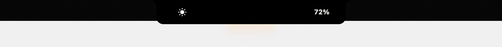
Режим клавиатуры
Новое в 2.1. Для внешней USB- или Bluetooth-клавиатуры NotchDeck включает переключение раскладки по Alt+Shift и заменяет левый Ctrl на Command — как на Windows-клавиатуре, подключённой к Mac. Встроенная клавиатура и правый Ctrl не меняются, в терминалах замена отключается.
| Состояние | Что означает |
|---|---|
| Авторежим | Включается при подключении внешней клавиатуры и выключается при отключении |
| Ручное выключение | Сохраняется после переподключения и перезапуска |
| Терминалы | Исключены из замены Ctrl, состояние — янтарное |
| DeskBridge | Если отдельное приложение уже управляет картами — активация блокируется, карты не перезаписываются |
Нужно разрешение «Мониторинг ввода» для самого NotchDeck: разрешение, выданное DeskBridge, не переносится.
Оформления
Пять стилей панели: от почти прозрачного стекла до неоновой кромки. Стиль меняется целиком, вместе со свечением и фоном плиток.
Выбранный стиль виден в демо: нажмите «Открыть демо», затем «Оформление».
Скриншоты
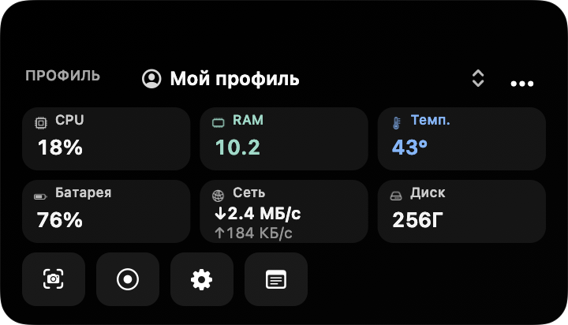
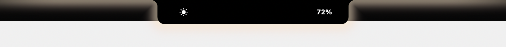
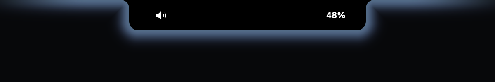
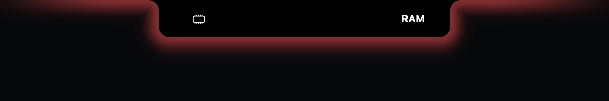
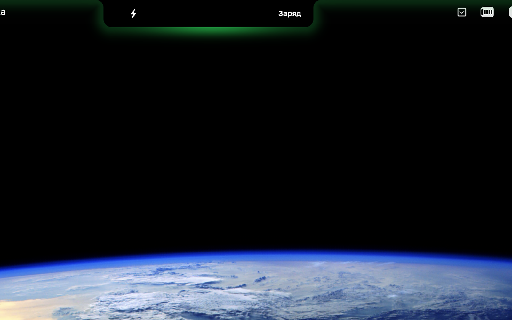
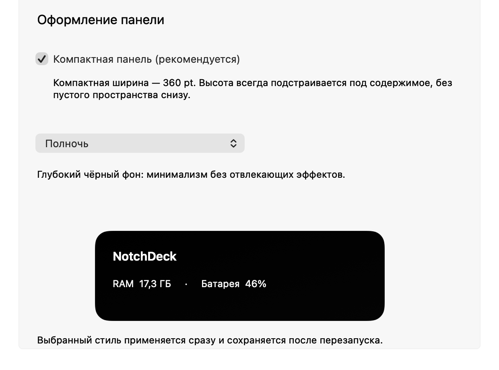
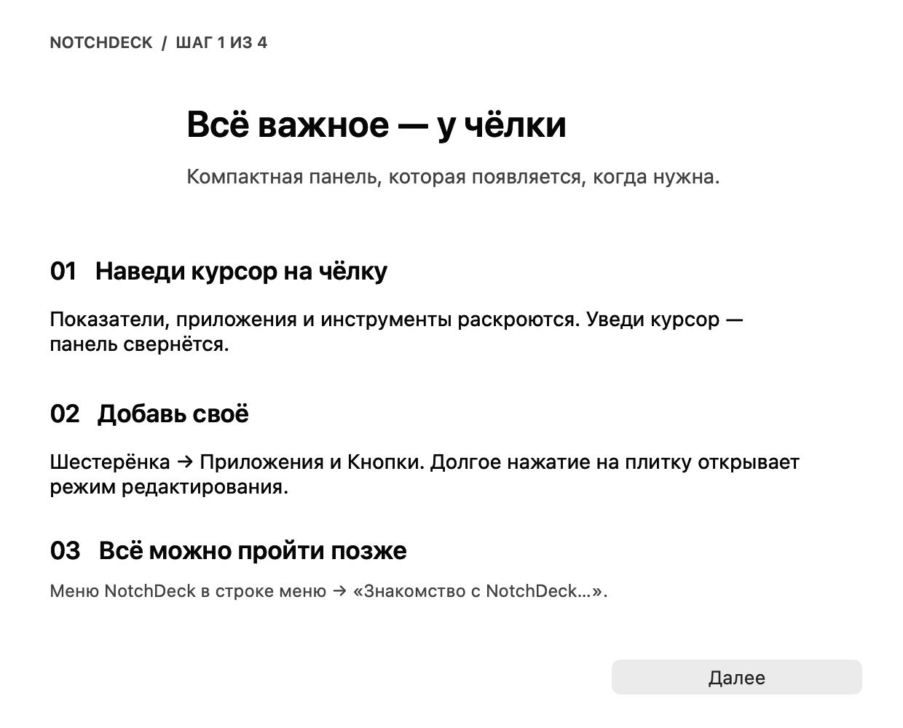
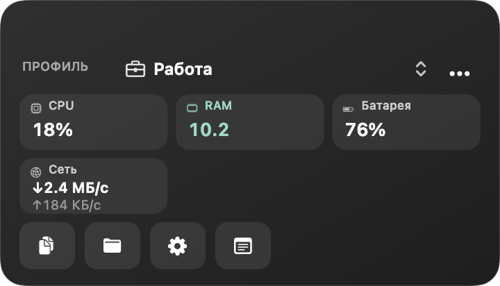
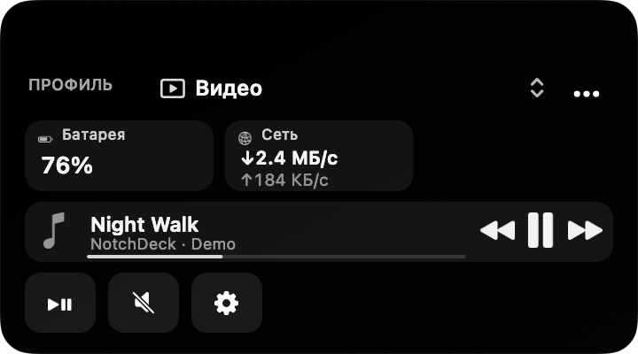
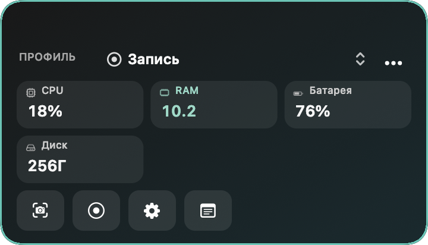
Использование
Наведите курсор на чёлку — панель раскроется. Уведите курсор — свернётся. Плитку можно закрепить кликом, чтобы держать показатели на виду.
| Действие | Результат |
|---|---|
| Наведение на чёлку | Раскрыть панель |
| Клик по клавиатуре | Включить или выключить режим внешней клавиатуры |
| Правый клик по панели | Меню: настройки, профиль, выход |
| Настройки | Общие, плитки, приложения, поведение, дизайн, клавиатура |
Сборка из исходников
Нужен Xcode Command Line Tools. Сборка не требует сторонних зависимостей.
git clone https://github.com/systemAdmin-ai/NotchDeck.git
cd NotchDeck
./build.sh
open Build/NotchDeck.appПроверки: ./scripts/check.sh запускает встроенные тесты, включая 25 проверок режима клавиатуры.
./scripts/check.shИнтерактивное демо
Полная копия панели на HTML и CSS: чёлку можно раскрывать, переключать клавиатуру, тянуть индикаторы и менять оформление. Данные синтетические.